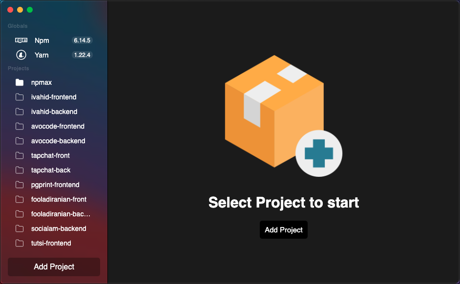

01
See what matters immediately
Open a project and get a direct view of dependencies, versions, outdated status, and install state without switching tools.
npMax gives your team one focused desktop app to inspect, update, and keep npm, yarn, pnpm, and Composer dependencies in sync.
Check outdated packages, preserve semver prefixes, monitor lock file status, and switch between multiple projects from a clean interface on macOS, Windows, and Linux.

npMax is not a generic launcher. It is a focused package management workspace designed to reduce repetitive CLI steps while keeping the important package details visible.
Open a project and get a direct view of dependencies, versions, outdated status, and install state without switching tools.
npMax preserves prefixes such as ^ and ~
when updating versions, so quick edits stay consistent with your
existing constraints.
Node and PHP projects can live side by side. The app detects
package.json or composer.json and shows
the right editor automatically.
From registry-aware version checks to lock file status and multi-project navigation, npMax covers the dependency tasks that usually get scattered across several tools.
View package lists from package.json and
composer.json, inspect versions, and work with
regular or dev dependencies from one desktop app.
npMax queries npm and Packagist to compare installed versions with the latest available stable releases.
The app indicates lock file status and offers a clear install or sync path when project manifests and lock files drift apart.
Keep a list of repositories in the sidebar, switch instantly, and use the same dependency workflow without reopening terminal tabs.
The app is optimized for the common maintenance loop teams repeat every week.
Add your repository, let npMax detect its package manager files, and load the dependency list with current versions.
Inspect outdated status, compare installed and latest versions, and decide which dependencies are ready to move.
Apply updates, preserve your version prefix, and run the correct install flow to bring lock files back in line.
Download the latest build from GitHub Releases and use the package format that matches your environment.
Native builds for both Apple Silicon and Intel Macs, suitable for developers who want a desktop GUI beside their existing toolchain.
Choose between the installer and portable build depending on how you roll out tools inside your workflow or team environment.
Use AppImage for flexible distribution or install the packaged
.deb release for Debian-based environments.
.deb packages for x64 and arm64npMax is free to use and lives in the open. The project already provides a straightforward local development flow for contributors.
npm install, then
npm run dev to get started.
Yes. npMax is an open source desktop application and the public releases are available from GitHub.
The app supports npm, yarn, pnpm, and Composer. It detects the project manifest and switches to the correct editor automatically.
Yes. npMax includes a project sidebar so you can keep several repositories available and move between them quickly.